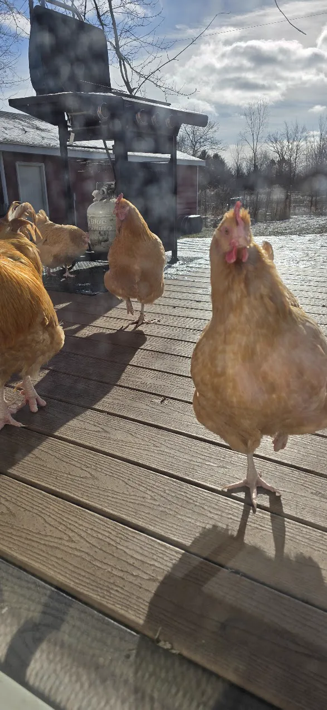

What Was I Made For?
I, like many, think a lot on what to do with the little amount of time we have. I don't think the question in the title has an answer. You were not made for anything - at least that's my view with my hard atheistic stance - in the sense of a purpose that a machine or something might have, and I find that freeing rather than bleak, at least most of the time. Because if there's no label telling you what you're made for, nobody can rightly tell you that you're doing it wrong. It's your time, only you can be the arbiter and judge of your use of your limited time.
Rather than Billie Eilish, let's consider a question proposed by a wizard.
“I wish it need not have happened in my time,” said Frodo. “So do I,” said Gandalf, “and so do all who live to see such times. But that is not for them to decide. All we have to decide is what to do with the time that is given us.”
— J.R.R. Tolkien, The Fellowship of the Ring
“What do I do with the time that is given us?” looks forward and is more positive, I think, because there is hope in the future but the past is fixed and often filled with regret.
Thinking of that future is uncomfortable, though. If you live to eighty, you get roughly four thousand weeks. Oliver Burkeman wrote a whole book with that number as the title. Doesn't it sound so foul? Four thousand of anything sounds like a lot until you realise you've already spent a chunk of them on school assemblies, commutes, and arguing with strangers on the internet. If you want to see it laid out visually, Bryan Braun's Your Life in Months will do the job.
In my case, I sometimes think of it in "visits". When I moved from Scotland to Michigan, I had to set my own personal expectations about how often I could afford to fly home. Once I admitted I'll make the trip every couple of years, I could count how many visits I could do. My grandparents were old when I left. I knew that the realistic number of times I would see them again was approximately one. It turned out to be exactly one. I don't regret this, because I had actually made the decision deliberately, knowing the likely times I would see them. Count the summers you have left with your parents: if you see them twice a year and they have twenty good years left, you get forty more visits, and that's assuming COVID-like event doesn't happen again (and it almost definitely will) reducing their and your time. Scary, right?
{kind=link}
© Ken Reid. All rights reserved. You get maybe sixty autumns as an adult.
I'm not telling you this to make it harder for you to sleep, but I'm a big believer in memento mori: remember that you must die. I'm telling you because every “one day” you're currently carrying around is actually something of a bet you're placing, that you will have time to achieve, but every day that passes by makes the likelihood of you winning that bet less and less likely, and one day the probability will reach 0 and the house will, as it usually does, win.
It doesn't help that this casino of possible lives is enormous, and you get to play a few games.
You could grow your own food. We keep chickens. You could go further: the smallholding, the polytunnel, the life where your hands are in soil every day. People do it and glow about it.
{kind=link}

© Ken Reid. All rights reserved. The most expensive free eggs in Michigan.
Or you could live rurally, properly rurally, where the night sky doesn't glow from reflecting city lights. Or in the mountains, where every window is postcard worthy and going to the store is a road trip. Or in a city, where you trade the sky for the thing cities actually offer, which is options: the gig on a Tuesday, the restaurant from a country you didn't know existed, the strange little museum, the people of all ilks.

© Ken Reid. All rights reserved.
Or you could chase the high-stress, high-pay career. Medicine, law, surgery, finance. Some people want the intensity, the stakes, the money that buys their family security.
Or you could do the thing you're passionate about regardless of pay, and live smaller in exchange for spending your days inside work you love. Also valid, and not morally superior to the previous option, whatever the pretentious Facebook posts claim.

© Ken Reid. All rights reserved.
Or, you could do something easy. Something painless. Something that fits the body you actually have rather than the body careers advice assumes. If you're disabled, or chronically ill, or simply exhausted by the wrong kind of work, then a job that doesn't hurt is a major victory for contentment and joy. “Follow your passion” is advice written by and for people whose bodies don't cause them pain and tire quickly.
Or the job can just be a job: a perfectly tolerable thing you do so that the rest of your life can be the point. The barista who's really a climber. The accountant who's really a novelist. The IT guy who's really a dad. There is no rule that says the answer to “what was I made for?” has to appear anywhere on your payslip, and you don't even have to have a payslip.
Every one of those is a real life that real people are happily living right now, and you cannot have them all. Most of the anxiety I see in people my age and younger isn't about failing, it's about taking the wrong path.
What a terrifying idea: taking the wrong path. It has such a real cost. Choosing always costs the alternatives; that's what makes it choosing. What's worse is that not choosing costs the same, plus time.
The best advice I know about deciding on your life choices comes from a comedian. In 2013, Tim Minchin gave a commencement address at the University of Western Australia that I think about often, and I've shown many people. His first life lesson, delivered to a hall full of fresh graduates expecting to be told to dream big, was: you don't have to have a dream.
“I advocate passionate dedication to the pursuit of short-term goals. Be micro-ambitious. Put your head down and work with pride on whatever is in front of your nose… you never know where you might end up. Just be aware that the next worthy pursuit will probably appear in your periphery, which is why you should be careful of long-term dreams. If you focus too far in front of you, you won't see the shiny thing out the corner of your eye.”
— Tim Minchin, UWA commencement address, 2013
I can vouch for the shiny things, because my entire career is made of them. I did not have a ten-year plan that said “Scottish kid → PhD in optimisation → move to America → animal genomics → data science.” Nobody plans that. Each step was just the most interesting thing in my peripheral vision at the time: a PhD that was maybe a "one-day" changed when I realized I was unhappy working at HP. A postdoc on another continent in a field I didn't know much about whatsoever came about by bumping into Prof. Wolfgang Banzhaf at a conference in Czechia. A department whose first act was to take their new vegetarian colleague to a steak tasting (funny story of miscommunication). If twenty-two-year-old me had written down a Dream and marched at it with the single-minded focus the posters recommend, I'd have missed every single fork in the road that led to the life I actually have, and I very much like the life I actually have.
When I say “plan,” later in this post, I do not mean “pick one distant summit and ignore everything else.” Minchin is so very right about that. Micro-ambition and planning are not opposites: you plan the next concrete step, you work it with pride, and you keep your peripheral vision switched on and constantly re-evaluate.
Somewhere along the way we also absorbed the idea that a person gets one Thing. One calling, one identity, one answer at dinner parties to “so what do you do?” It's nonsense. I always dislike that someone's job is their identity. Why can't someone who works in a bank be considered an Artist or a Baker first? You're allowed several goals at once, and you're allowed to swap them out as you go, and neither of those are character flaws.
Lives run in seasons. There are years for building a career, years for small children where survival is the achievement, years for the body and years for the bank balance. The goals that matter at twenty-five are barely recognisable at forty, and good riddance: a snake that keeps its first skin isn't loyal, it's dead. But that skin is very much needed till the next season.
Even the things that don't stick pay you in data. I have abandoned more hobbies than I currently hold: instruments half-learned, languages partly learned, at least one extremely confident attempt at making mead (it tasted pretty good to be fair). Every one of them taught me something about what I actually enjoy versus what I enjoyed the idea of, and the idea of a hobby is free, whereas the hobby itself costs time, money, and effort. You only find out which one you bought by trying.
College is the most expensive way to try things out. I'm biased, and I'll declare it: I'm Scottish, so university was free for me. I did an undergraduate degree and a PhD without tuition debt, and was paid for the latter. It is very easy to be philosophical about higher education when it didn't cost you as much as a house. People in the US doing the same calculation are playing a different game with much higher stakes, and they're right to ask harder questions about it.
The distinction I want to impart is that sometimes college is the key to a door: medicine, law, engineering. The degree exists to unlock specific work, and you should judge it on whether you actually want what's behind that door.

© Ken Reid. All rights reserved.
And sometimes college is the door itself, and that's fine too. Four years of learning to think, reading things you'd never have picked up, meeting people unlike anyone from your home town, finding out at low stakes what you're bad at. If that's what someone takes from a degree (even a degree they never “use”), they didn't waste it. We don't say a person wasted their twenties because they aren't professionally employed as a twenty-something. College doesn't have to be about career at all. It just has to be worth what it cost, and only you know both numbers. So go do that philosophy degree, learn about the history of mathematics or hell: go and do an underwater basket-weaving degree, because I truly believe that if that's what you enjoy and brings you fulfilment in our small lives, who the hell gets to say you shouldn't?
And of course, sometimes college is neither key nor door. I've always had great respect for apprenticeships, the trade, the certification, the job with a laptop and an internet connection. The electrician who skipped the lecture halls is not the cautionary tale; he's frequently the one who owns the holiday home and finds daily fulfillment, unlike the white collar office worker whose eyes hurt under florescent lights, muscles sagging and aching from sitting 8 hours a day, with a 1 hour commute on each end.
There's a particular dream nested inside the menu: what if the thing I love became the thing I'm paid for? Sometimes that's the best trade you'll ever make. Computer science was a hobby of mine before it was a career, and the career mostly didn't ruin it: I still get the same small joy from an elegant solution at work that I got at fourteen cracking video games and tinkering with OS's. For some people, going professional is the moment their craft finally gets the hours it deserved.
{kind=link}
© Ken Reid. All rights reserved.
But it can go the other way. The moment money is involved, the hobby acquires deadlines, clients, metrics, and other people's opinions. The photographer who goes professional discovers their craft is now 80% weddings and invoicing (a path I was tempted by but was swayed away from by professionals!). The baker who opens a bakery learns what 4am smells like. The thing you used to do to recover from work is now the work, and you have nowhere left to hide.
{kind=link}
© Ken Reid. All rights reserved.
I keep photography on the hobby side of the line deliberately. Nobody assigns me a shot list. If a whole trip produces one photo I love, the trip was a success, because the only stakeholder is me. The test I'd offer: would you still do it on a random Tuesday night if nobody paid you and nobody saw the result? If yes, be careful about selling it, because that Tuesday-night feeling is the asset, and not every buyer lets you keep it.
Which brings me to the thing I actually sat down to write about.
Everyone is carrying a list. One day I'll write a book. One day we'll live by the sea. One day I'll learn piano, see Japan, build the workshop, take my mum to Italy. The list feels like a plan because it's vivid; you can picture the sea from the kitchen window. But look closely and there's no date on any of it, no first step, no budget, no decision. “One day” is not a date. It's a place we store dreams so they stay safe from reality, and the storage isn't free: every year the list renews itself, and we feel vaguely virtuous for still having dreams, the way you might feel virtuous about a gym membership you haven't used since February.
Apply the arithmetic from the top of this post to that list and the storage fees become visible: unplanned dreams don't wait, they decay. The version of you who'll hike the West Highland Way needs knees, and knees have a schedule of their own (ask my poor Dad who spent decades on being in peak physical condition, only for his knees and shoulders to by ground down by weights and time). The people in your “one day” scenes (the parents in Italy, the friend on the road trip) are working through their own 4000 weeks. A dream without a plan is a slowly fading polaroid.
{kind=link}
© Ken Reid. All rights reserved. From Falkland Hill, Fife. I said “one day I'll move abroad” for years. Actually doing a job interview was the step towards doing it.
Here is the whole self-help content of this post, and I promise it's all of it: take the list out of storage and make every item pick a lane. The first lane is a date and a first step. Not “one day, Japan” but “Japan, spring 2028, and a savings pot opened this week.” The step should be small enough to do before the feeling wears off. Micro-ambition, remember: you don't plan the whole mountain, you plan the next ledge. If Japan trip turns into "Wedding", then you have savings aside for the wedding and time off saved up at work.
The second lane is shrinking the dream until it fits this year. Can't move to the mountains? Spend a week in them and find out if you even like the reality, if you actually really dislike the effect of altitude on your body. Can't write the book? Write the ugly first chapter. A shrunk dream that happens beats a full-sized one that doesn't, and it teaches you whether the big version deserves its place on the list.
The third lane is letting it go, on purpose, which sounds like defeat and is actually mercy. You CAN'T do everything you want to do in a lifetime. Some dreams belonged to a previous version of you and you're carrying them out of habit, like a jumper that hasn't fit in a decade but you used to love. Deciding “I'm not actually going to learn the guitar, and that's okay” isn't giving up. It's actually good for your mental health to reduce self-blame and guilt for not achieving your own dreams.
{kind=link}
© Ken Reid. All rights reserved.
What's not allowed (or rather, what costs the most while looking the cheapest) is the fourth option: keep everything, plan nothing, and let the arithmetic decide for you. Because it will. Time makes the choice on behalf of everyone who declines to make it themselves, and time's taste in lives is bland.
I don't know what you were made for. The wizard already told us the only thing we get to decide. Not the times we live in, not the length of the road; just what we do with the time that is given us.
Common questions
So did you figure out what you were made for?
No, and I've stopped treating that as a problem to solve. What I have instead is a short list of things that reliably make life feel worthwhile (people, building things, being outside with a camera) and a calendar that actually contains them. As answers go it's less poetic than the song, but it fits in a week, which the song doesn't.
Isn't "follow your passion" just advice for privileged people?
Often, yes. It assumes a body that cooperates, a safety net, and a passion that happens to be monetisable. That's why I've tried to put the easy job, the painless job, and the job-that's-just-a-job on the menu as equals. The goal is a life you'd choose again, not a payslip that doubles as a personality.
What if I genuinely have no goals at all?
Then Minchin's advice is for you most of all: you don't have to have a dream. Work with pride on whatever's in front of your nose and keep your peripheral vision on. Goals are often discovered mid-task, not selected from a catalogue beforehand. Boredom plus curiosity will produce a shiny thing eventually; your only job is to be looking slightly to the side when it appears.